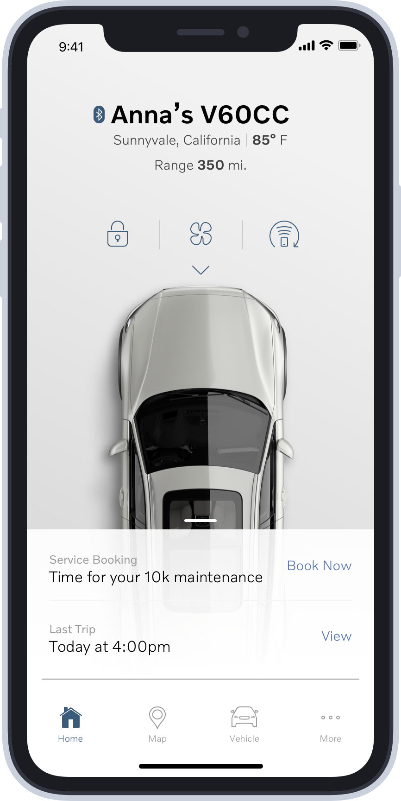
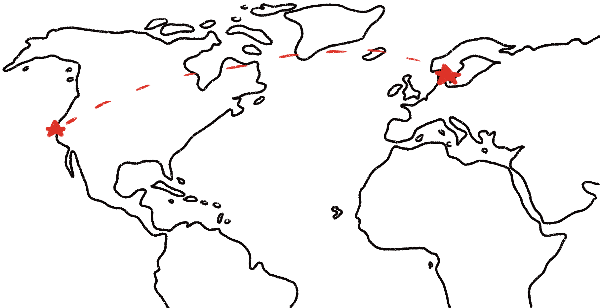
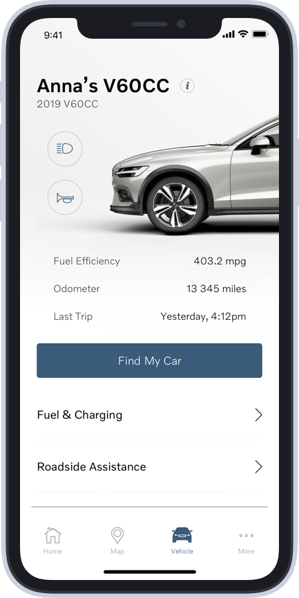
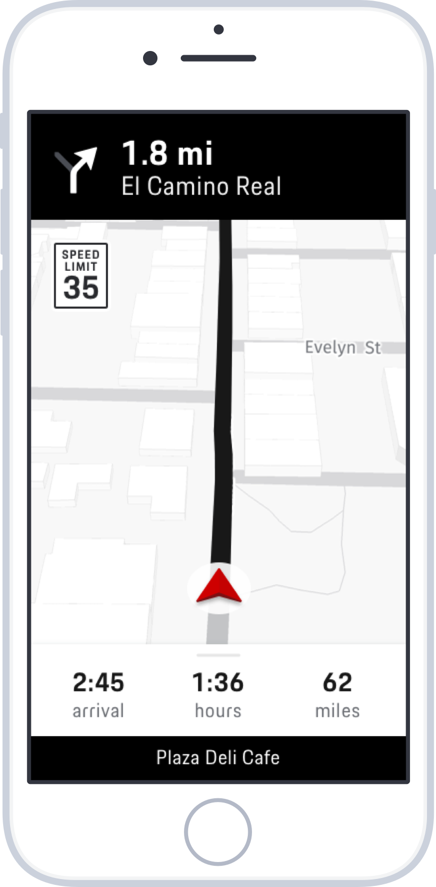
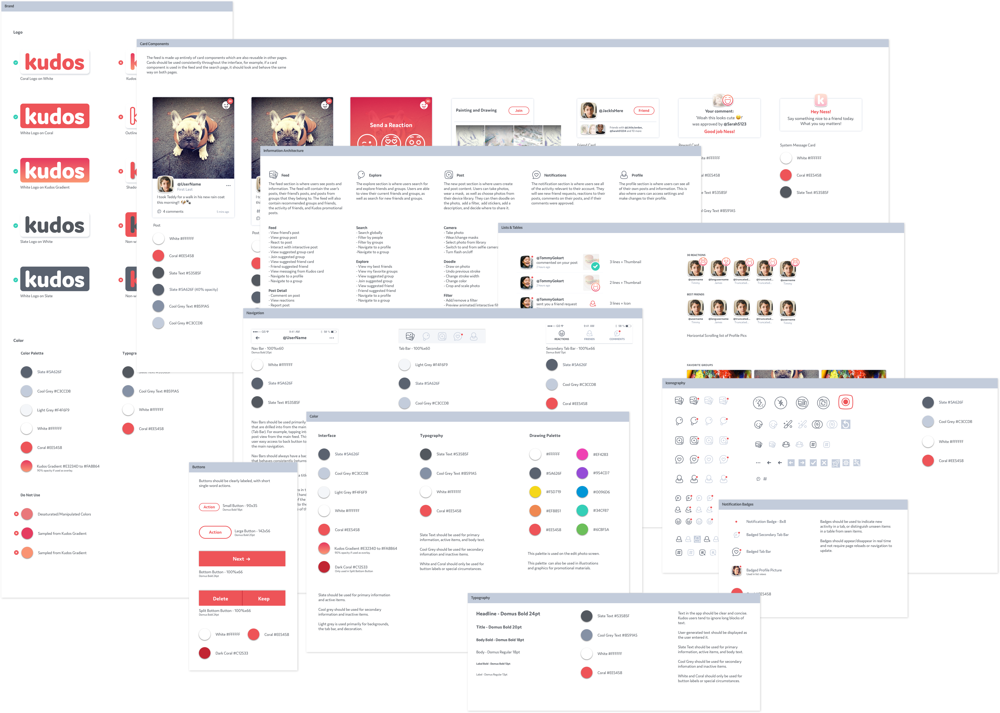
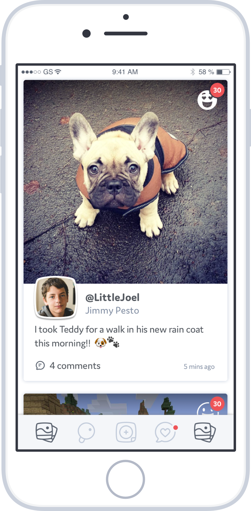
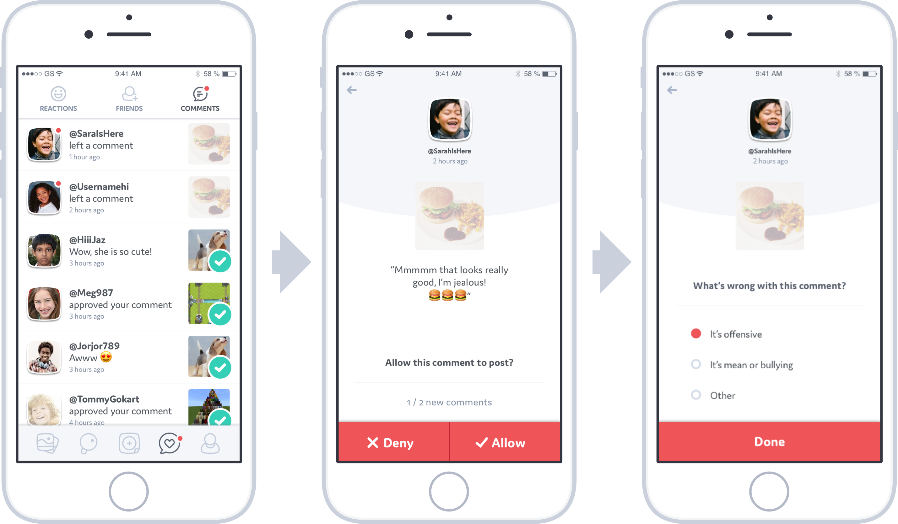

I have a decade of experience that spans the entire design process; including research, strategy, production, and branding.
My expertise is leading cross-disciplinary teams to create a visual language and design system.
I've had the privilege of working with a wide range of companies, from startups to Fortune 500;
including Volvo, Porsche, NBC, Amazon AWS, and Apple.
For my portfolio, I have 3 short case studies that highlight my work with Volvo, Porsche, and Kudos.
Volvo On-Call
Aligning multiple teams around one effort.
Volvo On-Call is a companion app for Volvo owners. The app functions as a remote; allowing users to start their car, control the AC/heat,
lock/unlock the doors, etc. Our team was responsible for expanding the app's functionality into the services, such as Amazon in-car delivery,
that are available to Volvo owners.

My role was to align multiple teams around one design language and interaction model that would work for the legacy feature of the app, but also allow for growth into the new service features. Design and development teams were located in Silicon Valley, Los Angeles, and Gothenburg, Sweden.

I was able to achieve this goal by traveling to Sweden and engaging the teams in collaborative workshops. This built trust among the team, and allowed us to focus on doing great work. This collaboration worked because we were all able to leverage our expertise. The car design team was able to use their intimate knowledge of the company's physical design process to influence the look and feel of the digital design language. The development team was able to answer any questions we had about feasibility, and help steer us towards solutions that were technologically scalable. I was able to use my expertise in interaction design and design systems to create a design system that would tie to the visual language into a cohesive app that was on-brand, consistent, accessible, and scalable.

I was also responsible for collaborating with our user research team. We conducted formal and guerrilla user research in 5 different countries: the United States, the Netherlands, Denmark, Sweden, and China. My main role in this effort was to help synthesize the research findings, but I also had the privilege of helping to conduct and observe the research in 4 of the 5 countries.
Porsche Road Trip
Sweating the details in interface design.
Porsche Road Trip is an iOS app that takes users on curated trips with beautiful drives and interesting stops. I led a small design and development team that was focused on the navigation portion of the app. We created a design system that was sleek and modern, but tied to the heritage of the brand. It was important to create an interface that looked at home inside of a Porsche, but were also robust and accessible in any driving conditions.

A piece of the interface that I am most proud of is the arrow set for the turn-by-turn navigation. There are many off-the-shelf arrow sets, but for a brand like Porsche it was crucial that all of the design details aligned with their brand. Porsche Digital uses a custom font, Porsche Next TT. We knew that the arrows would always be displayed next to text, and our goal was to create a set of arrows that would look cohesive with Porsche's brand font. After experimenting with dozens of custom arrows, we realized the answer was in front of us the whole time. We took shapes and curves directly from the font itself, and built a set of arrows that looked perfectly at home with Porsche Next TT.
Kudos
Creating a brand and app from scratch.
Kudos was a social media app designed for kids to learn about online etiquette in a safe environment with their peers. I was the design lead for a small team that created a new brand, style guide, component library, and core features for their new app.

The target audience for Kudos was preteens, so we created a brand and design language that was kid friendly, but not childish. We also created a component library that would allow the small Kudos development team to add new features and expand the app quickly.

One of our biggest challenges was creating a commenting feature that protected children from cyber-bullying, but was still simple and easy to use. I learned two important insights from reading research papers on cyber-bullying:
Kids prefer to handle the situation on their own if at all possible. This empowers them.
Bullying is less traumatic if it isn't done publicly, where peers can pile-on to the bullying.
I designed a comment flow using these insights. The system worked by requiring the user to approve or decline comments before they were shown publicly on their posts.

This system worked because it empowered the children to make their own decisions, and it allowed moderators to identify users that had a habit of leaving comments that would get declined.